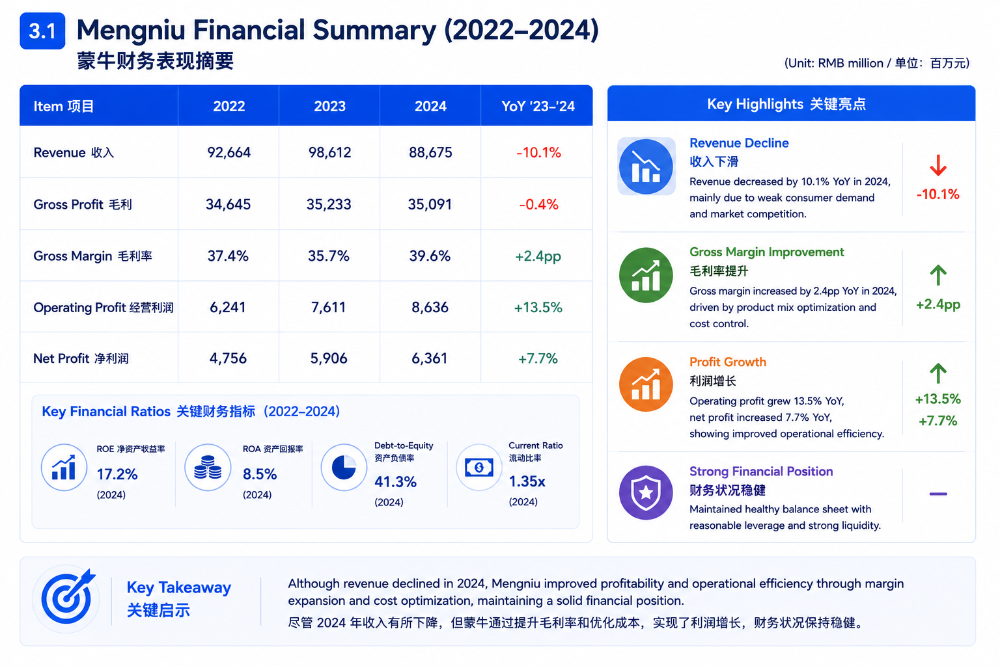
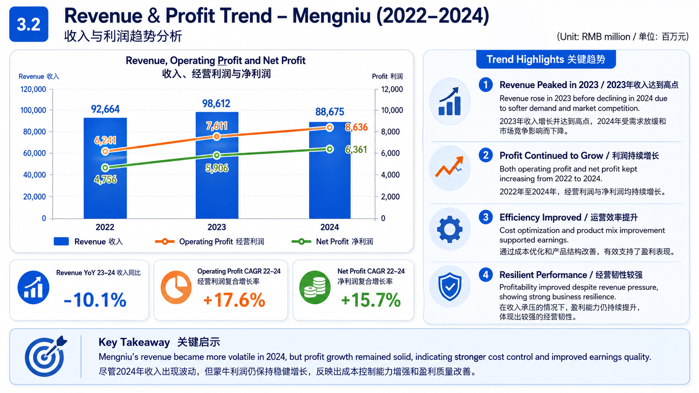
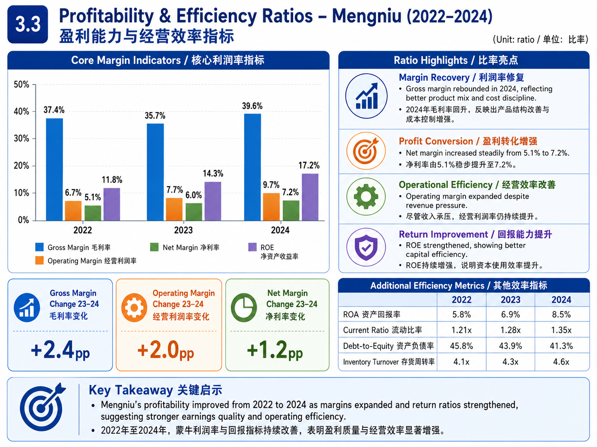
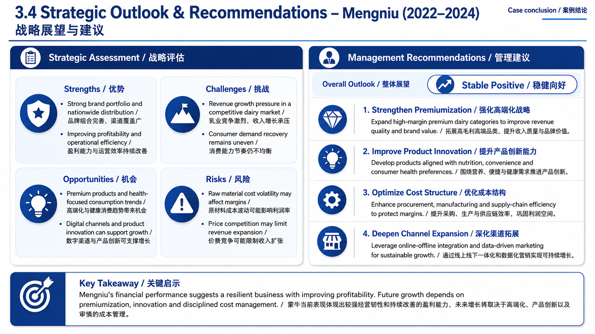

Project Overview
项目概述
-
Analysed Mengniu’s financial performance from 2022 to 2024, focusing on revenue, gross margin,
operating profit and net profit.
分析蒙牛 2022 至 2024 年的财务表现，重点关注收入、毛利率、经营利润和净利润。 -
Evaluated how Mengniu improved profitability despite revenue pressure through margin expansion,
cost control and operational efficiency.
评估蒙牛如何在收入承压的情况下，通过毛利率提升、成本控制和运营效率改善盈利能力。
Key Focus
分析重点
- Revenue and profit trend｜收入与利润趋势
- Gross margin and net margin improvement｜毛利率与净利率改善
- Operational efficiency and cost structure｜运营效率与成本结构
- Brand competitiveness and strategic outlook｜品牌竞争力与战略展望
Methods
分析方法
- Public financial data review｜公开财务数据回顾
- Revenue and profitability trend analysis｜收入与盈利能力趋势分析
- Ratio analysis and efficiency evaluation｜比率分析与效率评估
- Strategic assessment and recommendation development｜战略评估与建议制定
Preview Materials
预览材料

Financial Summary｜财务表现摘要

Revenue & Profit Trend｜收入与利润趋势

Profitability & Efficiency Ratios｜盈利能力与经营效率指标

Strategic Outlook & Recommendations｜战略展望与建议